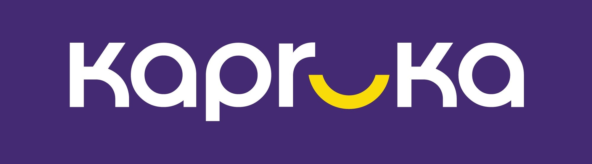

On purple chrome (primary)
Vector recreation (.svg)
kapruka
— always lowercase, rounded geometric sans. The "u" is a yellow upward arc: a literal
smile
. Never recolour it. The JPG ships with its own purple field, so place it directly inside purple-700 surfaces.